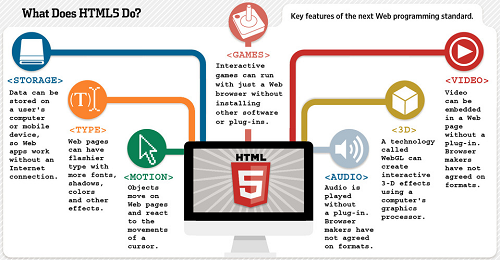

|
Home | About | Product | Gallery | Contact |
|  | ||
What we work ? |
||
Hypertext Markup Language (HTML) is the standard markup language for creating web pages and web applications. With Cascading Style Sheets (CSS) and JavaScript it forms a triad of cornerstone technologies for the World Wide Web.[1] Web browsers receive HTML documents from a webserver or from local storage and render them into multimedia web pages. HTML describes the structure of a web page semantically and originally included cues for the appearance of the document.HTML elements are the building blocks of HTML pages. With HTML constructs, images and other objects, such as interactive forms, may be embedded into the rendered page. It provides a means to create structured documents by denoting structural semantics for text such as headings, paragraphs, lists, links, quotes and other items. HTML elements are delineated by tags, written using angle brackets. HTML can embed programs written in a scripting language such as JavaScript which affect the behavior and content of web pages. Inclusion of CSS defines the look and layout of content. The World Wide Web Consortium (W3C), maintainer of both the HTML and the CSS standards, has encouraged the use of CSS over explicit presentational HTML since 1997.HTML is a markup language that web browsers use to interpret and compose text, images, and other material into visual or audible web pages. Default characteristics for every item of HTML markup are defined in the browser, and these characteristics can be altered or enhanced by the web page designer's additional use of CSS. Many of the text elements are found in the 1988 ISO technical report TR 9537 Techniques for using SGML, which in turn covers the features of early text formatting languages such as that used by the RUNOFF command developed in the early 1960s for the CTSS (Compatible Time-Sharing System) operating system: these formatting commands were derived from the commands used by typesetters to manually format documents. However, the SGML concept of generalized markup is based on elements (nested annotated ranges with attributes) rather than merely print effects, with also the separation of structure and markup; HTML has been progressively moved in this direction with CSS. HTML instructs the browser on how to display text and images in a web page. Recall the last time you created a document with a word processor. Whether you use Microsoft Word or Wordpad, Apple Pages, or another application, your word processor has a main window in which you type text, and a menu or toolbar with multiple options to structure and style that text. Using your word processor, you can create headings, write in paragraphs, insert pictures, or underline text. Similarly, you can use HTML to structure and style text that appears on websites.Markup language documents, like HTML documents, are just plain text files. Unlike documents created with a word processor, you can view an HTML file using any web browser on any type of computer. |
||
How It works? |
||
|
|
|
| Name1 | Name2 | Name3 |
HTML elements are the building blocks of HTML pages. With HTML constructs, images and other objects, such as interactive forms, may be embedded into the rendered page. It provides a means to create structured documents by denoting structural semantics for text such as headings, paragraphs, lists, links, quotes and other items. HTML elements are delineated by tags, written using angle brackets. |
There are two axes differentiating various variations of HTML as currently specified: SGML-based HTML versus XML-based HTML on one axis, and strict versus transitional versus frameset on the other axis.Aside from the different opening declarations for a document, the differences between an HTML 4.01 and XHTML 1.0 document—in each of the corresponding DTDs—are largely syntactic. |
HTML lacks some of the features found in earlier hypertext systems, such as source tracking , fat links and others.[84] Even some hypertext features that were in early versions of HTML have been ignored by most popular web browsers until recently[when?], such as the link element and in-browser Web page editing. Sometimes Web services or browser manufacturers remedy these shortcomings. |
| @Copyright 2016-2017| All Rights Reserved | Metacube Training |